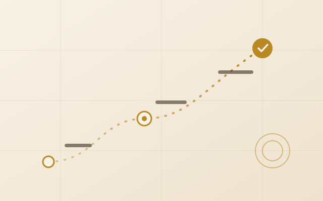
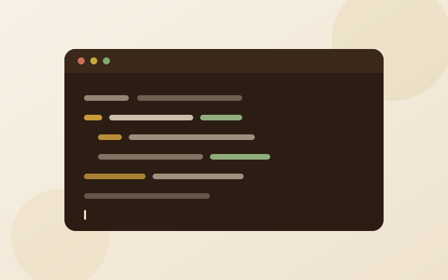

About me
How a self-taught developer from Tanzania ended up building a full website-auditing platform.
Hello, I'm
Aspiring Software Developer
Computer Systems and Networks StudentA student developer from Tanzania learning by building real tools, like website scrapers that collect data automatically, and security scanners that help find weak spots before attackers do.
Explore the portfolio

How a self-taught developer from Tanzania ended up building a full website-auditing platform.

HTML & CSS, JavaScript, Python and web security, with honest skill levels.

The Oweru platform: a 23-check website scanner, a scraper, a CRM, payments and more.
I scan, scrape, score and fix websites, and I explain everything in plain language.
Start a conversation